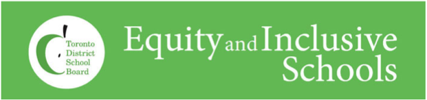
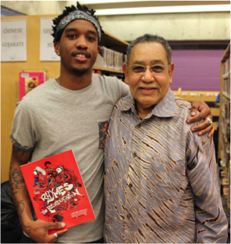
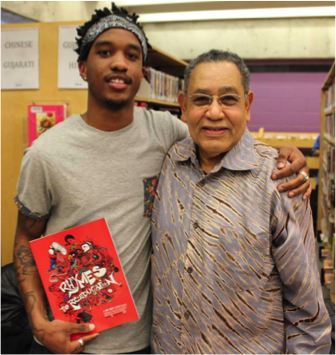

Equity and Inclusive Schools

Parent & Community Engagement
The Toronto District School Board Years of Action 2013 – 2017 is a bold and innovative plan that has outlined the system vision and goals to ensure that the entire TDSB community is valued, respected and receives the best education possible. In essence it requires all schools sites to be inclusive, equitable, proactive, caring and safe teaching and learning environments.
The aim of the Board Improvement Plan for Student Achievement (BIPSA) is to reach higher levels of achievement for all learners. “Student achievement, student well-being, and equity of opportunity and outcomes” are therefore recognized as being the primary commitments for the development of the BIPSA. More specific, the school system supports Student Achievement and Wellbeing through fulfilling its commitment to Equity and Inclusive Schools in curriculum, assessment and school climate.
The Equity and Inclusive Schools team recognizes that the Years of Action is ambitious, inclusive and an actionable vision which represents and affects our entire TDSB community. To be sure, the core purposes are all encompassing and require purposeful, longitudinal and sustainable professional learning opportunities for all stakeholders to help support and bring the plan to fruition. Racialized students represent 70% of the TDSB student population and just over 40% of TDSB families live below the poverty line. Therefore, the team posits that in order for the system to reach its targets, TDSB professional learning opportunities have to be explicit in addressing issues of power, identity, culture and schooling if we are to realistically achieve these goals. Particularly for the groups of students that are below provincial standards, they will have to see an increase in their Report Card and EQAO assessments by a minimum of 15% if they are to fulfill the Years of Action 2013-2017 goals.
As such, as we come to the end of the 2013/14 school year the Equity and Inclusive Schools department would like highlight some of the initiatives that we have embarked on in the past school year that we believe have helped create spaces for critical discourse and proactive initiatives to take place. Using the Years of Action as the framework for our work we have not only facilitated professional learning and shared research with schools, Families of Schools and Central departments, but also for York District School Board and the Ontario Education Research Symposium. The work of the department has focused on professional learning opportunities to increase understanding of Culturally Relevant and Responsive Pedagogy that help to create inclusive curriculum and assessment practices, increase student achievement of racialized and special needs learners, as well as establish positive school climates and proactive school community relationships.

Raise the Bar Symposium
Equity and Inclusive Schools, Student Equity Program Advisors (SEPA’s), coordinated a day to remember symposium at Winston Churchill CI titled “Raise the Bar.” Students attending the Elementary Africentric School and Africentric programs at Downsview and Churchill have commented on the positive emotional, social, and academic benefits that come from the rich, Africentric curriculum - a curriculum that is culturally responsive and relevant to our students’ histories and communities. Guest speakers reflective of the African and Caribbean Canadian identities spoke to their career and life journeys highlighting specific success strategies, coping mechanisms, and supports they have tapped into in order to attain their levels of achievement especially against the backdrop of everyday and systemic barriers including race, gender, and class-based oppression among others.
OGAP Student Advisory Committee
In support of closing the achievement gap, the Equitable and Inclusive Schools Team created an OGAP Student Advisory Committee. A powerful group of students representative of the demographics most affected by the Opportunity Gap (Students of African and Caribbean Descent, Latin/Hispanic, Middle Eastern, Portuguese speaking, Aboriginal, Somali and Roma). This group fostered student creativity, leadership and well-being in a meaningful way. Up to 60 students representing 16 schools met bi-monthly to provide support and feedback on current TDSB issues and trends. This group was created to give a centralized voice while promoting capacity building through youth leadership, advocacy, and citizenship.
Positive School Climate Walkthrough
The Ontario Ministry, school board and the Equity and Inclusive Schools department is focused on reducing the opportunity gap and creating caring, safe and inclusive school climates for all of our students. As such, a particular focus of our department is the continuation of building capacity within the TDSB on embedding equity and inclusive education into School Improvement Plans. By assisting schools with human and material resources, we are supporting the Ontario Ministry Education PPM #119
(Developing and Implementing Equity and Inclusive Education Policies in Ontario Schools) and TDSB’s strategic directions (Make every school an effective school, identify disadvantage and intervene effectively and build leadership within a culture of adaptability, openness and resilience).
The Positive School Climate Walkthrough process during the 2013/14 school year has been a great success! This proactive initiative, that we pilot tested in the 2011/12 school year, has continued to support numerous schools throughout the system building capacity with all school stakeholders (central staff, school level administrators, teaching staff, support staff, students, parents and the local community). The walkthrough process is made up of a series of sessions that lay the foundation for a collective understanding of equitable and inclusive curriculum and the importance of student and parent/community voice. Through a series of professional learning sessions that utilize data driven dialogue and Culturally Relevant and Responsive Pedagogies to help build a common framework of understanding of a positive school culture, stakeholder teams participate in a walk around their school site. After the actual walkthrough, participants work collaboratively to review the process, share observations and develop strategic supports based on walkthrough findings to incorporate into the School Improvement Plan.
The Positive School Climate Walkthrough process demonstrates a unified commitment to student success and equity of outcome by fostering a school culture that supports student achievement and engagement in an equitable, inclusive and safe environment. By working as a collective and using a collaborative approach to supporting a positive teaching and learning environment that honours diverse voices, while at the same time establishing accountable and transparent school improvement plans that focus on identifying and removing barriers to student learning, schools are truly upholding the ideals of inclusive education.
As such, our department looks forward to assisting more schools in the 2014/15 school year with the facilitation of this process, in order to develop purposeful collaboration, increase stakeholder efficacy, build capacity and develop deep/sustainable positive, safe and inclusive school climates.

Girls’ Body Talk:
Conversations on Body Image,Race, Culture & Well Being
For many of our students, conversations on self-esteem and body image are pertinent to help support well-rounded student social, emotional, and academic well-being. Research also demonstrates the additional layer of complexity that gendered, racialized and Aboriginal female students can experience as they negotiate their body images and identities. On Friday May 30, 2014 Equitable & Inclusive Schools, Student Equity Program Advisors (SEPA’s) and the Aboriginal Education Centre hosted a Girls’ Body Talk: Conversations on Body Image, Race, Culture & Well Being – a full-day conference geared towards self-identified South Asian, First Nations, Metis, Inuit Aboriginal/Indigenous, and African Canadian/Caribbean female students in Grades 10 and/or 11. The issues and challenges voiced by the girls will be shared with respective schools to help build on school climate, student voice and overall Equitable and Inclusive schools improvement. Conference hosts will record participants’ opinions on particular issues, challenges, and opportunities facing racialized girls and this information will be shared with their respective schools to help build school climate, student voice, and overall Equitable and Inclusive Schools Improvement.
SEPA Workshops
Student Equity Program Advisors continued their mandate and provided over 100 workshops to middle and secondary school students reaching over 3000 students on topics including: equity, healthy relationships, anti-homophobia, identity, and anti-oppression, body image, self-esteem, mental health and wellbeing, cyber bullying, anti-racism and many others.
HIP HOP as Critical Pedagogy
From Rhymes to Re-EducationWhat does it mean to engage Hip Hop music and culture as critical pedagogy? How might such an approach impact the engagement and achievement of students in Grades 2 and up, as well re-define the possibilities for teaching and leading for equity and social justice? This year Equitable and Inclusive Schools (EIS), in partnership with the Teaching, Learning and Leading department (TLL) facilitated an exploration of these very questions with 70 TDSB teachers. The multi-day workshop series involved leadership from many community partners and provided the space for teachers to: explore the theoretical understandings of Hip Hop as Critical Pedagogy (HHCP); investigate and field test lessons; support students in exploring their own identities, those of others, and themes of power and privilege; attend an HHCP exploration classroom; and design lessons and extensions that are grounded in Hip Hop pedagogy and incorporate the principles of differentiated instruction and multiple intelligences. Teacher participants had multiple opportunities to reflect on their experience in the modules. A few of their comments are captured below.
Teacher Reflections:
“Hip-hop allows a discourse about race, religion and identity and gives permission for students to explore who they are and where they come from.”
“Hip-hop allows us to tackle controversial issues that exist within our society. Issues that educators sometimes struggle within their classes."
The foundation for this teacher exploration was laid last year through collaboration between EIS, TLL, Education Attainment West (EAW), and various youth and community partners. The physical product of this collaboration is a book titled Rhymes to Re-Education: A Hip Hop Curriculum – the resource that was the jump off point for this teacher learning.The Rhymes to Re-Education curriculum writing (Phase 1 of the project) began in March 2013. Lead by members of the EIS and TLL departments, the Hip Hop Curriculum Writers Collective met in numerous working sessions to facilitate the writing of a resource guide for educators. The final product is available for purchase at www.adifferentbooklist.com and hosts over twenty-three lessons and activities that utilize Hip Hop music and culture to investigate social justice themes like racism, classism, sexism, homophobia, knowledge of self, unity, peace and love. The resource describes the what, why and how of using Hip Hop as Critical Pedagogy to engage and activate the hearts and minds of learners. In reflecting on the process that was explored in creating this resource, one community participant commented…
 

Community Reflection:
“I really appreciated the space made for young people in the process. One of the youth I brought in was able to write a lesson and now it will be published. People really worked with him and I really appreciated the space for him to feel comfortable enough to do this…And there were young people who also documented and played different roles, but I really appreciated the space for the young people to become writers.”
Phase 3 of this project will involve opportunities to explore the potential of HHCP with community-based educators and to continue to strengthen relations between schools and community partners as we together embark on the mission of educating and re-educating our young people and providing curriculum that is both relevant to the identities and experiences of young people and responsive to their day-to-day realities.
To find out more about Rhymes to Re-Education and the use of Hip Hop As Critical pedagogy in classrooms and communities, check out…
Promo Video: Rhymes to Re-Education: A Hip Hop Curriculum http://www.youtube.com/watch?v=SVSD6qp-388
Facebook: facebook.com/RhymesEdu
Twitter: twitter.com/rhymesedu Contact: ramon.sanvicente@tdsb.on.ca
Student Council Equity Training
The TDSB Equity Department conducted their annual Student Council Equity Training. Throughout the fall, over 450 student council members from 75 secondary schools received Equity 101 training, to learn how to incorporate an equitable lens when planning events and understand the need to be reflective of the greater student body. This critical training creates a space that supports youth leadership and encourages responsible citizenship in their schools and communities.
To support strengthening school climates and creating caring school cultures, the TDSB Equity Department delivered Equity Train the Trainer modules in 11 high schools, training over 300 students in equity facilitation and providing 2,430 students with the basics in equity education. Through this model, 300 students received 8 hours of instructional time dedicated to learning about the TDSB’s Equity Foundation Statement and Equity issues related to the 5 pillars of equity. These student facilitators delivered workshops to all grade 9 or 10s in their respective schools.
Family of Schools
Collaborative Inquiries in Culturally Relevant and Responsive Pedagogy
Our team engaged in collaborative inquires across several Families of Schools during the 2013-4 school year. One teacher representative from each school took part in this initiative. In some FOS, Student Equity Advisors worked with students to solicit student voice about their school experiences. Administrators presence in these sessions was also vital to ensure capacity building among all teachers in the school. The purposes of these inquiries were threefold:
• explore CRRP as a means of creating more equitable and inclusive classrooms/environments for students
• provide a framework for participants to share their learning and exploration at their schools and within the FOS
• increase the achievement level of disengaged students
These inquiries have proven to have a powerful effect and influence on teacher practice as evidenced in the following quotes:
“CRRP has forced me to look at my students with a different perspective. I understand that all my students come to school with funds of knowledge. It is my responsibility as a teacher to learn about my students’ communities and tap into their knowledge. I learnt during this workshop that by acquiring cultural competencies and engaging my students in critical thinking, I can improve student achievement.”
“I now expect academic success from every student. I also have tried to incorporate more opportunities for students to challenge the dominant narrative.”
“It has made me take into account the importance of finding resources/topics that excite student and what they are interested in. Otherwise they will not be engaged.”
The Beyond Borders:
United for our Future Conferenceas an example of youth-led social action
On April 9, 2014, over 200 students arrived at OISE/University of Toronto for a full day of workshops, networking, and the opportunity to hear a visiting professor speak to them about her own experiences as a Latina living in the United States. This event was led by a group of Latino students enrolled in a Saturday Equity Studies program at Central Technical School, and they partnered with the Centre for Urban Schooling at OISE, TDSB staff from various departments, and community organizations in its implementation. The theme of the conference was Beyond Borders: United for our Future, which highlighted the students’ intentions of expressing the diversity of the Latino community while engaging in collective social action initiatives. Such work also grounded the Latino student recommendations that were presented to our previous director after the 2012 Avanzando Unidos conference; such recommendations included opportunities for Latino youth to participate in future system-wide initiatives.
The Equity Studies students were involved in the entire organization and implementation process, including the workshop design and facilitation, inviting their keynote speaker, helping at the registration desk, and photographing the event. As the day also marked the International Day of Pink, they also wore bright pink name tags to symbolize their solidarity in working towards gender equity.
When it came to designing the workshops, the students determined that they wanted to cover a diverse array of topics that were relevant to their lives as Latino youth. In partnership with various community organizations and TDSB staff from various departments, the students co-designed and co-facilitated workshops addressing topics like gender stereotypes, financial literacy, career pathways, as well as the complexity of Latino history and identity. The attending teachers were also engaged in the conference through workshops involving data-driven dialogue and hip-hop pedagogy. The keynote event was filled with exciting activity including a musical performance, a keynote speech from Dr. Patricia Sanchez from the University of Texas at San Antonio, and some words from Superintendents Jim Spyropoulos and Jacqueline Spence.
While this event was part of the Equity Studies students’ social action coursework, they shared their pride at having organized such a large event and their commitment to continue working with and for their communities.
Student Conferences
The Equity and Inclusive Schools Office held two student conferences (Students of African Heritage and Latin American/Hispanic Student Success) as well as two student focus group consultations (with Middle Eastern students and Boys of Caribbean Descent) to address the achievement gap and promote enhanced student engagement in our schools. Students participated in conversations on a variety of topics including: healthy relationships, goal setting, navigating post secondary options, and life skills topics to promote skill building and give students tools for success. These conferences supported student wellbeing by providing a space for student voice while connecting students with community supports around health promotion and advocacy.
Building Leadership Capacity in Culturally Relevant and Responsive Pedagogyand the Four R’s with Teaching and Learning
Equity and Inclusive Schools delivered two three part module sessions on Culturally Relevant and Responsive Pedagogy (CRRP) to approximately 80 Instructional Leaders from the period of December 2013 – May 2014 in partnership with Aboriginal Education and Model Schools for Inner Cities. These Instructional Leaders represent a variety of departments including but not limited to Science and Technology, Math and Numeracy, Outdoor Education, Early Years, Health and Physical Education and English/Literacy. This represented our Departments commitment and desire to build capacity in CRRP and the Four R’s in a wide range of subject areas. Utilizing the theoretical frameworks of CRRP and its three tenets of Academic Success, Cultural Competence and Critical Consciousness and the Four R’s (respect, responsibility, reciprocity, and relevance).
Participants were challenged to infuse and reflect on how these frameworks could be used in their own work with teachers in schools. Critical to this work was the development of next steps/future actions spurred on by the following questions:
• How might I engage teachers in critical and courageous conversations about how they view students, families and communities with certain social identities?
• How might my own social identity render me less or more inclined to lead professional learning through the lens of CRRP?
Students of Latin@ and Portuguese-Speaking Heritage
Engaging in social action initiatives and research through their Equity Studies program
This semester, a group of students from the Latin@ and Portuguese-speaking communities have been engaged in an Equity Studies program at Central Technical School. These two groups of students have been identified by the Opportunity Gap Action Plan as groups who have been experiencing clear achievement and opportunity gaps, and as such, this program aims to address these circumstances while fulfilling the Five Strategic Directions, particularly those pertaining to effective intervention, building leadership, and forming strong and effective relationships and partnerships.
During their Saturday program, the students discuss the issues pertaining to their lived experiences as youth, including race, ethnicity, and gender. These discussions then form the basis of their research inquiries as well as their own social action initiatives within their schools and their communities. Approximately 45 students are currently enrolled in the program; about 20 are enrolled in the Latin@ cohort and about 25 are enrolled in the Portuguese-speaking heritage cohort. Depending on his or her grade level and credit accumulation history, each student is eligible for either a Gender Studies (HSG3M) or an Equity Studies: From Theory to Practice (HSE4M) credit. These credits comprise two of the four Equity Studies courses that have been implemented this year in the newly revised Social Sciences and Humanities curriculum. While there are two classes that deal with the issues specific to their communities, they have also partnered on numerous occasions to not only talk about the historical and contemporary effects of colonialism, but to also engage in youth solidarity initiatives that raise awareness of equity issues from youth perspectives while building their capacity as leaders. Based on the principles of critical pedagogy, this Saturday program is centred on the students’ lived experiences, concerns, interests, and input. Each of the two classes engage in curriculum on topics such as identity, power relations, as well as media representation. In conjunction with their course instructors, the students have also partnered with other adults and community organizations whose expertise has helped guide the students in building their own capacity as youth leaders and advocates of social justice. The Portuguese-speaking cohort engaged in a community walk and also conducted research on the experiences of Portuguese people at Dufferin Mall. They then did a comparative study when they travelled to the Boston area in April.
The Latin@ cohort partnered with the Centre for Urban Schooling at OISE/University of Toronto to organize a Latin@ student conference on April 9th. For this event, which drew over 200 students from 27 schools around the TDSB, the students designed and co-facilitated a variety of workshops along with staff from various TDSB departments and community organizations. These workshops, which covered topics like financial literacy, career pathways, Latin American history, and body image, served as a means of sharing knowledge and building networks between Latin@ students across the TDSB. Since then, the Latin@ cohort has been involved in a variety of other social action initiatives, including volunteering at a joint TCDSB-TDSB Latin@ Family Forum, writing letters about their concern over biased curriculum, and facilitating workshops events like the Social Justice Fair at York University on May 8th.
For more information about this Equity Studies program, please contact the Equity and Inclusive Schools department.
Ontario Education Research Symposium
This school year the Equity and Inclusive Schools Department presented the Opportunity Gap Action Plan Professional Learning Modules at the 9th Annual Ontario Education Research Symposium that took place February 18-20, 2014. The theme of the 2014 event was “Building on Success: Mobilizing Quality Evidence to Inform Policy and Practice.” The symposium brought researchers, educators and policy makers together to “build partnerships, identify shared priorities, and reinforce strong connections between research and practice”. As such, the Equity and Inclusive Schools department felt honoured to be able to share a potential model structure for professional learning that can address clear achievement gaps in relation to racialized groups of students and students living in poverty, with the larger education community.
In the winter of 2013, Equity and Inclusive Schools offered professional learning opportunities for teachers (grades 7-12) of racialized groups of students named in the Opportunity Gap Action Plan. Four professional learning cycles ran parallel, each with a focus on specific groups of students, including disengaged and academically struggling students that identify as Black, Latino, Portuguese Speaking, and Roma. Using the framework of Culturally Relevant Pedagogy (CRP), participating teachers engaged in a collaborative inquiry with colleagues to explore how CRP might enhance the engagement and achievement of their focus students. Teachers gave attention to the learning experiences of their focus students and how those students responded to strategies used in the classroom. Teacher expertise, knowledge from community partners, and the experiences of students were mobilized to guide practice. Teachers shared their experiences, monitored and generated strategies for engaging particular students, and identified successes and challenges. Findings showed the potential of such a professional learning model as a means of addressing gaps in achievement and engagement amongst students named in the Opportunity Gap Action Plan.
Ideally, this professional learning model can be modified, built upon, and re-focused depending on context and needs. In particular, having individual school PLCs mobilize a collaborative inquiry model that focuses on intervening to enhance engagement and achievement of marginalized students may prove extremely effective. The work involved in Opportunity Gap Action Plan Professional Learning Modules clearly shows the effectiveness employing explicit equity approaches in collaborative inquiry professional learning models to have a direct impact on students.
For more information about this professional learning model please contact the Equity and Inclusive Schools department.
Leadership for Equity and Social Justice:
The Power of Student Voice
Equity and Inclusive Schools recognizes the crucial role that our TDSB school administrators play in removing barriers to student learning and wellbeing, as well as providing leadership that supports the maintenance of equitable and inclusive environments. As such, this year we designed and implemented a professional learning opportunity for administrators to identify disadvantage within their schools and intervene effectively by responding to the self-identified needs of our most vulnerable populations of students. The title of this professional learning was Leadership for Equity and Social Justice and it emphasized the power of student voice and the necessity to access the silenced and often overlooked voices of our most marginalized student populations.
Facilitated during Family of Schools Leadership Team Meetings, the goals of Leadership for Equity and Social Justice were to:
• provide a framework for participants to share their learning and exploration at their schools and within the FOS
• build capacity for equitable leadership and intervention
• with a focus on issues of equity, explore the process of gathering, analyzing and responding to data as a means of creating more equitable and inclusive environments and moving staff forward on the equity continuum
During their three part series, administrators explored issues of power and privilege as they relate to schooling, engaged in data-driven dialogue about the opportunity gaps in the system, their FOS, and their school, and investigated Theoharis’ 2010 work titled Disrupting Injustice: Principals narrate the strategies they use to improve their schools and advance social justice. They then proceeded with the task of identifying a marginalized population at their school and organizing a focus group conversation with representatives from this group in order to gain insight into the successes, challenges and possibilities in terms of meeting their academic and social/emotional needs. Finally, administrative teams analyzed the focus group data, identified the gaps and needs, planned an appropriate intervention, and measured their impact. While many administrators were challenged by the task of engaging in this work while burdened by other priorities and timelines, based on some of the feedback that was received this model appeared to provide a needed opportunity to listen, reflect and respond in critical ways.